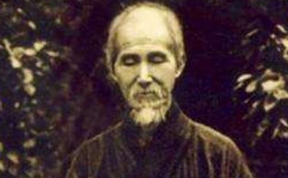

“众生至爱者身命，诸佛至爱者众生”。这句话，往往能深刻的反应出世人所至爱的，无非自己及妻子儿女的身命，以及由此而带来的财产、名声、利益等，大家一天到晚，朝朝暮暮，争来夺去，总在这里范畴内。为了自身及眷属利益，为了自身及眷属
相信大家对近代的高僧—
舍利，是
虚云老和尚每天报时信号三板刚响就起床，至晚上夜深人静，不用蒲团，在
虚云老和尚第一次看到，阿育王寺内舍利塔内的舍利大如
至十六日，有八位僧人来寺探望虚云老和尚。虚云老和尚想起原计划定于明天在大雄宝殿燃指供佛，便恳求首座和监院师父准备。首座等众僧都不同意，怕出生命危险。虚云老和尚不觉泪如泉涌，说：“生死谁能免！我为报答母恩发愿燃指供佛，假如因病而中止，生又有何益？何不如燃指供佛了心愿而死，死亦无憾！”年仅21岁的监院宗亮师听后，大为感动，流着眼泪说：“你不要难过，我助你了这个心愿，明天由我打斋请大众吃饭，我现在就去给你安排好！”虚云老和尚合掌谢之。
十七日早斋毕，在宗亮师等众师的搀扶下，虚云老和尚到各个殿堂进香
待虚云老和尚站定，维那师一捺大磬，大家合掌，恭敬合唱：“炉香咋热，法界蒙薰，诸佛海会悉遥闻……”伴随着庄严嘹亮的敬香供佛《炉香赞》唱起。方丈和尚拈香，虚云老和尚拈香，年轻的监院宗亮师拈香。礼佛九拜后，虚云老和尚跪在释迦牟尼佛前，撩起衣袖，伸出了左手的无名指。宗亮师请他的师弟宗圣师用纱布帮虚云老和尚包好无名指，拿来油灯帮他燃手指。大家齐声念起了《
虚云老和尚坚定的仰望着释迦牟尼佛。燃烧的手指头“啪啪”作响。火烧完了肉，烧到指骨，他还是一样和大家称念八十八尊佛的名号。初尚觉疼痛难忍，继而心渐清定，进而智觉朗然。当念至“法界藏身阿弥陀佛”时，顿觉全身八万四千毛孔一齐竖起，所有病痛烦恼罪障悉皆随着无名指烧成掉落的灰炭，飞到九霄云外。
指已燃毕，上供十方诸佛，功德回向法界，虚云老和尚竟能起立礼佛，不用人扶，此时已不感觉自己有病，于是不行酬谢大众，自己可以走回房间，大众感叹稀有。第二天，用盐水泡一天，亦未流血，不数日肌肉完复，虚云老和尚又可以恢复每天的
虚云老和尚在病重之中，危难之中，将自己的身心全部放下，燃指供佛，蒙佛加被，得偿宿业，健康不求自得。虚云老和尚此举，实有依据。
《楞严经》中，
虚云老和尚燃指供佛之壮举，堪比
一切众生喜见菩萨作了这样的法供养后，生命结束之后，再次生到日月净明德佛的国土中，他在净德王家中，结跏趺坐，忽然化生，在告诉他父亲前因后果后，来到了日月净明德佛的住所，五体投地，向佛顶礼并说偈赞佛，而日月净明德佛也于当夜
一切众生喜见菩萨见佛进入涅槃，非常悲伤，把最名贵的旃檀堆积起来，置佛身于其上以示供养，接着点着旃檀焚烧。火熄灭后，收集舍利，盛放在八万四千个宝瓶之中，修起八万四千座宝塔供养舍利。
一切众生喜见菩萨为供养佛的舍利，于八万四千舍利塔前，燃着了自己的百福庄严臂，此臂燃烧了七万二千年，作为供养佛的舍利。
当时这位菩萨在大众中立誓：“我现在舍双臂供
世尊告诉大众，当时的一切众生喜见菩萨，就是现在的药王菩萨。他所行的舍身布施，其数目是难以说穷尽的。
世人几乎都怕死，殊不知此生彼灭，彼灭此生，在无限的时间长河里，在无数的宇宙生灭中，自己不知道生灭了多少回数。佛无妄语，如果我们沿着佛指引的路不断进行修行实践，到达这个境界的时候，就会知道自己的生生世世，就会知道自身和世间的一切事物，都是假相，根本不足恋，就会随意生和死，知道死并不可怕。
倘若只是为妻子儿女、名闻利养而奋斗终生，则是空得人身，空在世间走一遭，永远无法度脱生死
愿世人多一份内心的平和，少一份内心的苦恼；多一份醒悟，少一份痴迷；多一人得度，少一人堕落；多一人到得
如此，乃是如来真实本义！